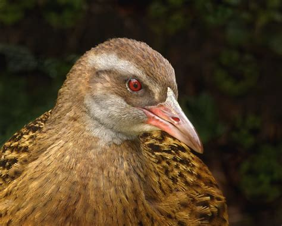

Wekas are large, brown, flightless birds, known for their feisty personalities and adaptable nature, found in New Zealand's forests and around urban areas. They are primarily brown with varying shades, and have distinctive calls, especially at night. Wekas are found in the North Island, South Island, and Stewart Island.
